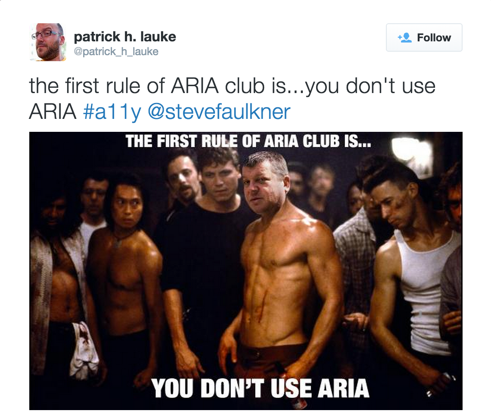

An Inclusive Web
Heather Migliorisi
What is (Web) Accessibility?
Accessibility means a digital world for everyone, regardless of where, when, why, and how you consume the content that is being communicated. It’s communication that’s non-discriminatory in every way.
-from simplyaccessible.com
Accessibility means a digital world for everyone.
But, WHY?
Money - Larger potential consumer/user base
Census Data Concludes: Nearly 1 in 5 People Have a Disability in the U.S.

Money/Legal - Work With the Government

Businesses must comply with Section 508 when supplying Electronic and Information Technology goods and services to the federal government. - source webaim.org
Money/Legal - Avoid lawsuits and/or bad press
Reduction of Legal Risk as Web Accessibility Business Case and List of LawsuitsMoral - Improve the lives of people living with disabilities
Benefits Everyone
Benefits Everyone
Benefits Everyone
Benefits Everyone - Learning

Preparing for future technology

Classifications
Vision (approx 8.1 million people)
Color Blindness: difficulty distinguishing between colors
-
Achromatopsia
-
Deuteranopia
-

Protanopia
-

Tritanopia
Color Blindness

Low Vision: blurry, clouded vision, central field loss, and tunnel vision

Blindness: substantial, uncorrectable loss of vision in both eyes

Hearing (approx 7.6 million people)
Motor (approx 19.9 million people)

Video

Listing from Etsy's shapedad
Cognitive (approx 9.4 million people)
Things to consider...
What about you?
Temporarily Disabled
Eventually Less-abled
Environmentally Impaired
We Are Addicted
There's No Hope
#OneDayWithoutInternet
What if...
You go to buy the latest/greatest tech gadget, but a blank page is all that loads.
...the page is freaking out and filled unrecognizable errors
What if...
every website you visited was like this?
When do you give up?
Why are so many users getting broken pages?
HTML IS accessible by default:

- text and links
- images with alt text
- simple forms

Yahoo Today

Issues We See Today

- Overriding browser defaults (tabindex, outline)
- Using poor semantics
- Audio/Video (without cations/transcripts)
- Javascript (manipulating the dom)
Accessibility is NOT a feature, it's part of the foundation.
Accessibility needs to be a:
- business requirement
- part of planning meetings
- design requirement (personas)
- development requirement (code standards and special features)
- QA item
Accessibility should not be an afterthought.
Mobile-First & RWD

image stolen from the internets metamonks.com
Accessible Web Design (AWD) OR Accessible-First

Inclusive/Universal Design
Getting Started
Think "POUR"
The four main guiding principles of accessibility are:
Perceivable - provide content alternatives (images, audio, video)
Operable (without a mouse)
Understandable - clear and simple (writing and functionality)
Robust - works across many devices
ARIA provides a set of attributes that you can add to HTML elements.

- role
- state
- property
First rule of ARIA use
First rule of ARIA use: Don't use it!

"ARIA roles add nothing to default semantics of most elements" - Steve Faulkner
from On HTML belts and ARIA braces (The Default Implicit ARIA semantics they didn’t want you to know about)Don't add default implicit roles to elements
❮button role="button"❯ button text ❮/button❯
Don't add ARIA state or property attributes in addition to their native HTML counterparts
❮input type="text" required aria-required="true"❯
❮div hidden aria-hidden="true"❯
Don't add ARIA roles and states or properties to long-implemented structural elements
❮h1 role="heading" aria-level="1"❯heading text❮/h1❯
New(ish) HTML5 Elements with default implicit semantics
What this means is that, where implemented, the browser will expose the default implicit semantics of the element so you don’t have to.
❮header❯ maps to role="banner"
❮nav❯ maps to role="navigation"
❮main❯ maps to role="main"
❮section❯ maps to role="region"
❮article❯ maps to role="article"
❮aside❯ maps to role="complementary"
❮footer❯ maps to role="contentinfo"
New(ish) HTML5 Elements: Browser Support
New(ish) HTML5 Elements: Browser Support

BUT IE and Safari do not offer support for all of the role mappings. -Deque University
USE it for Landmark Roles
❮header role="banner"❯
❮nav role="navigation" ❯
❮main role="main" ❯
❮footer role="contentinfo" ❯
Step 1. Audit For Bots

W3C Validation

Note - conformance checking

Notes on conformance checking
Semantic HTML
- Headings
- are meant to help users understand content hierarchy
- are not meant for visual styling
- levels should not be skipped (BAD - h1, h2, h4)
- Links, Buttons, Divs and Spans
- Links - are being styled like buttons, which is fine. Just don't mark them up as buttons.
- a, div and span ARE NOT buttons
BAD!Products - if it acts like a button, make it a
Good:
Step 2. Keyboard Accessibility
Does it: Highlight what it's on?

Does it: Jump somewhere unexpected?

Do you have to go through the main nav?

Provide a skip nav
Provide skip to page sections

Step 3. Contrast & Color
ContrastThe difference in color and light between parts of an image. -wikipedia
Image from: howdesign.comHow can we check this?

Meaningful Without Color
Bad: Error Messaging Relies on Color
Meaningful Without Color
Better: Message Conveyed With Icons

Testing

Step 4. Transcription & Closed Caption
Simple. Do it.
But, DON'T do it with YouTube.

Because it's awful!

Unless ... they are edited
Do it with style.
Step 5. Meaningful Alternative Text

Testing Alt Text

Figure and Figcaption
Be careful when choosing houseplants if you have pets. They may be poisonous to the animal.
Off Screen Text for Icons
HTML
CSS
//hiding text elements from the view, but keeping them available to the screen reader
.sr-only {
position: absolute !important;
height: 1px;
width: 1px;
overflow: hidden;
clip: rect(1px, 1px, 1px, 1px);
clip-path: polygon(0px 0px, 0px 0px, 0px 0px, 0px 0px); //for clip being deprecated
}
Accessible SVGs
Example from: Tips for Creating Accessible SVG by Leonie Watson
Accessible Canvas
Step 6. Easy To Read and Understand Content
Readability and Comprehension

- Make sure the text is large enough and has proper contrast.
- Choose easy to read fonts.
- Left align the text. It's easier to read.
- Keep in mind that users may have a hard time with visual, math or reading comprehension.
- Use clear and simple written content.
Testing

Step 7. Animation
Things to avoid:

- Large areas of motion and the parallax-like effects of background and foreground moving at different speeds
- Autoplaying carousels without controls to pause or stop it
- Scrolljacking - background animates at a different speed than your scrolling effort
Step 8. Functional and Logical Forms
Forms
- DO NOT use positive
tabindex="1" - Label everything and link the label to the input
Step 9. Test Using A Screen Reader
& Test Using Other AT
Step 10. Test With Real Users

Think of it this way: you wouldn’t want a designer or developer to do usability testing by testing the design or code on themselves. ... They’re already familiar with what problems the design is supposed to be solving, and how the interface works. - Jeremy Keith
Step 11: Record/Document the Audits
Make note of pages you audit:
Step 12: Provide Code Samples


Step 13: Add Testing to build Process
So many ways:
- NPM: https://www.npmjs.com/browse/keyword/a11y
- Gulp-a11y
- Grunt-a11y
- Tenon
- Ember
- React
- pa11y (dashboard): http://pa11y.org/
pa11y http://pa11y.org/

Online Testing Tools
- http://wave.webaim.org/
- http://tenon.io/
- http://leaverou.github.io/contrast-ratio/
- http://www.hemingwayapp.com/
Chrome Testing Tools
- Tenon
- Wave
- Chrome Developer Tools
- aXe
- NoCoffee